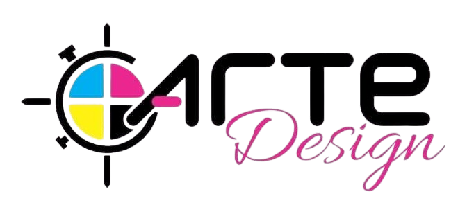

Arte e Design: Uma Dança Entre Criação e Função
Arte e design, duas disciplinas que se entrelaçam e se complementam,
mas que possuem naturezas distintas.
-
A arte busca a expressão individual, a provocação, a
beleza intrínseca e a interpretação subjetiva. Ela explora a
criatividade sem limites, desafiando convenções e questionando a
realidade.
-
O design, por sua vez, tem como objetivo criar
soluções funcionais e esteticamente agradáveis para problemas
específicos. Ele se baseia em princípios de usabilidade, estética e
tecnologia, buscando atender às necessidades e desejos dos usuários.
A interseção entre arte e design é evidente em diversas
áreas:
-
Design gráfico: A criação de logotipos, embalagens e
interfaces digitais combina elementos estéticos com a comunicação
eficaz de uma mensagem.
-
Design de produto: A forma e a função de um objeto se
unem, resultando em produtos que são tanto úteis quanto belos.
-
Design de interiores: A decoração de um espaço
envolve a seleção cuidadosa de cores, texturas e objetos para criar
uma atmosfera específica.
-
Moda: A roupa se torna uma forma de expressão
individual, combinando estética e funcionalidade.